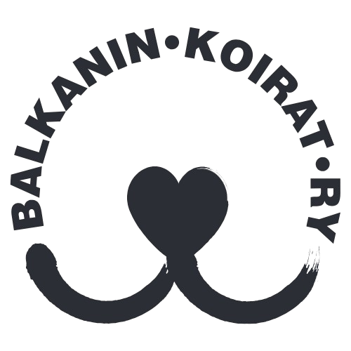
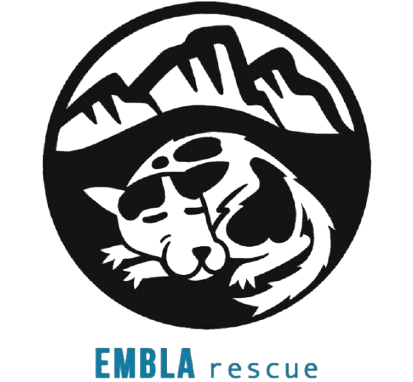
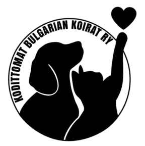
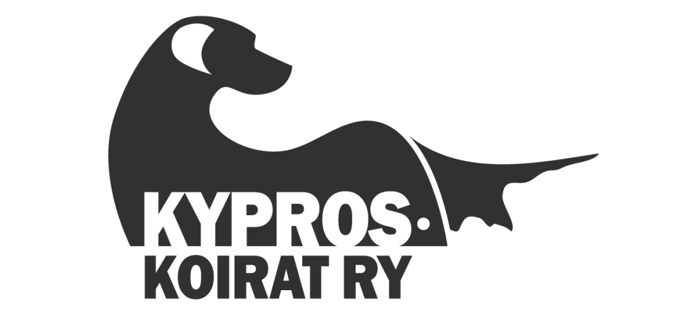
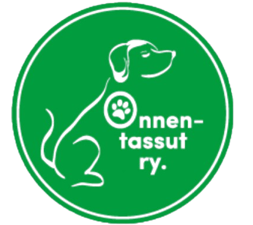
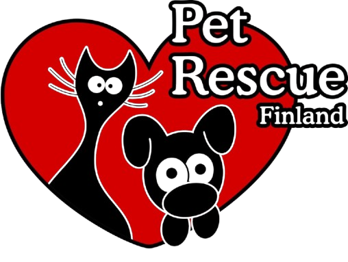
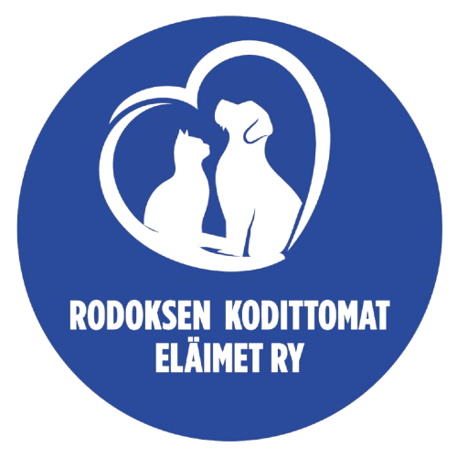
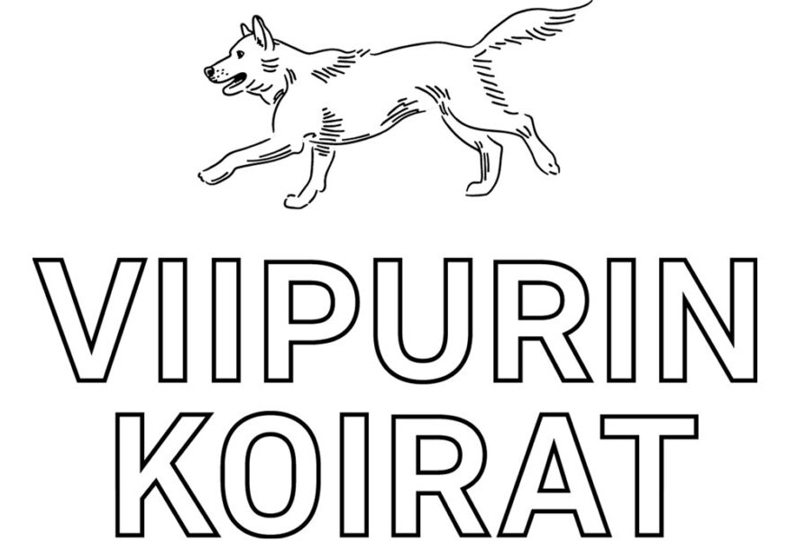
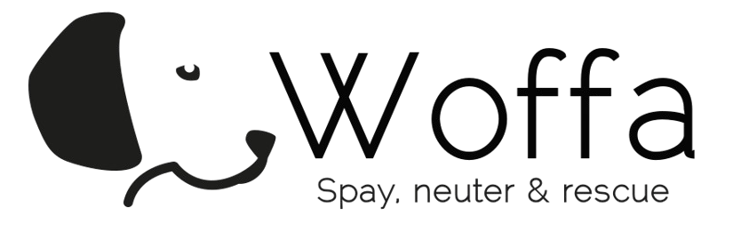

Balkanin koirat ry
Balkanin koirat on vuonna 2015 perustettu kestävää eläinsuojelua edistävä yhdistys. Yhdistyksellä on oma 200 koiran turvakoti Pohjois-Bosniassa, jonne he pelastavat koiria läheisiltä tarhoilta. Avustustoimintaan kuuluu mm. sterilointiprojektit ja koirien elinolojen parantaminen.

Embla Rescue ry
Embla Rescue on vuonna 2019 perustettu Romanian kodittomien koirien auttamiseen. Embla Rescuen erityispiirteenä on auttaa erityisesti niitä koiria, joiden on muuten vaikea saada apua tai kotia. Lisäksi rahoittavat paikallisten eläinlääkäreiden tekemiä sterilointeja.

Kodittomat Bulgarian Koirat ry
Kodittomat Bulgarian Koirat ry on suomalainen rescueyhdistys, joka edistää katukoirien ja -kissojen hyvinvointia Bulgariassa. Adoptio on tärkeä osa yhdistyksen toimintaa, jotta tarhoilla riittää tilaa ja yksilöt saavat omat kodit.

Kyproskoirat
Kyproskoirat ry on 2012 perustettu yhdistys, joka toimii pienimuotoisesti Kyproksen löytökoirien hyväksi.Tavoitteena on edistää eläinten hyvinvointia Kyproksella, sekä turvata ja ylläpitää yhteistyötarhalla elävien koirien terveyttä. Yhdistys auttaa ruoka- ja tarvikelahjoituksiin myös Pafoksella sijaitsevan kulkukissatarhan kodittomia kissoja, sekä tukee kaduilla elävien kissojen sterilointeja ja akuutteja terveysongelmia.

Onnentassut ry
Onnentassut on 2018 perustettu yhdistys, jonka pääavustuskohteena on tällä hetkellä Romania. Yhdistys auttaa katueläinten steriloinneissa, ruuan hankinnassa, lääkinnällisissä toimenpiteissä sekä adoptoinneissa.

Pet Rescue Finland ry
Pet Rescue Finland on 2016 perustettu eläinsuojeluyhdistys, joka auttaa kodittomia koiria Liettuassa. Yhdistys edistää vastuullista eläinsuojelua lisäämällä tietoisuutta koirien ja kissojen hyvinvoinnista sekä vaikuttamalla populaation hallintaan mm. sterilointiprojektien avulla.

Rescueyhdistys Kulkurit
Rescueyhdistys Kulkurit on 2012 perustettu yhdistys, Romanian kodittomien koirien auttamista varten. Yhdistyksen tavoitteena on vähentää kodittomien koirien määrää, ja he ovatkin pystyneet lopettaa toiminnan Virossa vuonna 2014.
Rodoksen kodittomat eläimet
Rodoksen kodittomat eläimet on 2016 perustettu yhdistys kodittomien kissojen ja koirien hyvinvointia ja kohtelua edistämiseen ja populaatiokasvun ennaltaehkäisyyn Kreikan saarella. He kustantavat sterilointien lisäksi muita hoitotoimenpiteitä, ruokia ja tarvikkeita. Iso osa toimintaa on kotihoito- ja adoptiotoiminta kissojen ja koirien auttamiseen.

Viipurin Koirat
Viipurin Koirat on 2006 perustettu yhdistys, joka pyrkii vähentämään kodittomien koirien määrää Viipurin alueella. He tukevat sterilisointitoimintaa, ja avustavat alueen löytöeläintarhoja. Yhdistys hankkii ja toimittaa koirille ruokaa, lääkkeitä ja auttaa aitausten ja suojien rakennuksessa. Tärkeä osa yhdistyksen toimintaa on pysyvien kotien löytäminen koirille.

Woffa ry
Woffa ry on 2018 perustettu yhdistys, joka tukee eläinsuojelutyötä ja auttaa muuttamaan löytöeläimiin suhtautumista Romaniassa. Iso osa toimintaa on Romanian koiratarhoilla ja kaduilla asuville koirille pysyvien kotien löytäminen Suomesta.
